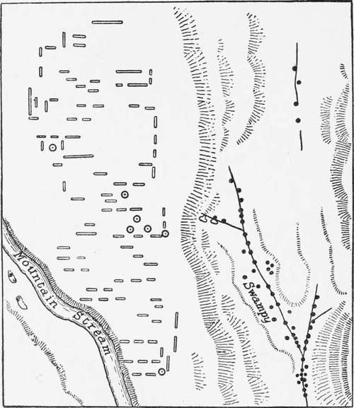

Larvae. Part 5
Description
This section is from the book "Malaria, Influenza And Dengue", by Julius Mennaberg and O. Leichtenstern. Also available from Amazon: Malaria, influenza and dengue.
Larvae. Part 5
Enemies Of Larvae
Fish, as we have already pointed out, and as has been confirmed by many observers, devour larva? greedily, but, on the other hand, fish and larva? may occur together. The reason for this may be twofold: (1) That the larva? are protected by a sufficiency of weed; (2) that the particular species of fish is not one that specially feeds on larva?; thus in experiments made on common fish of the Indian tanks some, such as catfish and carp, either devoured them very slowly or not at all, whereas six young barbels devoured about 100 larva? in a quarter of an hour. Larva? have a great many enemies to contend with, such as Libellulidae larvae, Dytiscidae., those of Agrionidce, Chironomidce, Nepidae (water scorpions), Notonectidce (water boatmen), etc., and their larvae. Some of these devour larva? very rapidly; the process can readily be watched by placing the enemy and the larva? together in a tumbler of water. There is still one important point with regard to the destruction of larva? which remains to be illustrated. It was at first thought that the Anophelince and their larva? were not found far from the haunts of men. This, however, is true only in a measure, for from the instances already quoted it has been shown that Anophelince exist on remote mountain tops, far from human habitation, and they are not uncommonly found in jungles some miles, at least, distant from habitations. But, as we shall see immediately, it becomes important in all these questions to know exactly what species of the Anophelince we are dealing with, and many observations made not only take no regard of this point, but even do not distinguish between the Anophelince and the Cidicince. Now, if we examine the larva? in the neighborhood of a tropical village, we are astonished to find that in the pools about the native huts larva? of one or more kinds abound, but if we then extend our search to other sources, e. g., a neighboring stream, a lake, or a canal, we find that no longer are the larva? those of what we may term foveal or "domestic" mosquitos, but they belong to a quite different number of species, the non foveal or "wild" mosquitos. If we take a particular instance, the matter will become clearer. We will suppose that we are examining all the breeding ground in the neighborhood of a native village in India. In the pools, puddles, and collections of dirty water about the huts we find the larvae of M. rossii and no other larvae. If we next examine collections of water containing much weed, in ditches, and small swamps, ponds, etc., we find that the larvae of M. rossii are completely absent in these, and we find possibly the larvae of Mr. nigerrimus; and the converse is true, that these larvae are never present in dirty shallow puddles about the houses. This holds good not only for these larvae, but for many others. Thus, while the breeding grounds of M. listoni and M. rossii may be adjacent, yet they are not found together. M. listoni is found at the edges of streams and in swampy localities; M. rossii, in the dirty puddles in the immediate vicinity of the native huts. And, again, Christophers and myself found this peculiarity in India for a particular species, N. stephensi, that although there were numerous breeding grounds at hand, yet this species was not found there, but, on the contrary, only in kerosene tins and earthenware pots. Again, to take yet another instance: on one side of a road was a weedy lake; on the other side, a small stream leaking out from the former; in the lake only N. fuliginosus was found, in numbers; in the small stream, only M. culicifacies. That mosquitos exercise a selection in the choice of a breeding ground is very evident from these examples. Grassi, for instance, states that A. maculipennis is much commoner in dwellings than A. bifurcatus, which is a frequenter of woods, and than P. superpictus, which is found near swamps and marshes. This probably corresponds to differences in the habitat of the larva?, but on the habitat of particular species very few observations have as yet been made. To this question of "domestic" and "wild" mosquitos we shall return in considering the habits of the images.
Fig. 8.-Portion of Coolie Lines on a Tea Plantation to Show Different Breeding-Grounds of M. rossii, M. listoni, and N. maculatus (from Stephens and Christophers' " Practical Study of Malaria").
O = M. rossii; • = M. listoni and N. maculatus.
Larvicidal Bodies
It will not be necessary here to consider in detail the various larvicidal bodies that have been used, for in practice, from reasons of cheapness and procurability, hardly more than one or two are used. Of these, petroleum, tar, or kerosene oil is the one that is most generally used, as it is cheap, always procurable, and effective. Among the many other bodies that have been used, one of the anilin colors, Larycith III,* has been found to> exceed in potency all soluble larvicides. In dilutions of 0.00015 to 0.0003 pro mille it will destroy all young larva? in a maximum time of seventy two hours, or if dissolved in a mordant (1:1000 caustic soda), it will kill in thirty hours. At the same time, however, it destroys all aquatic life, being a soluble diffusible poison, but it is innocuous to mammals. The stronger solution is necessary to kill the larger larva?, and the time required is somewhat longer, but of its efficiency there can be no doubt, and, moreover, it has the advantage that the solution remains active for about two months.
With regard to its cost: to destroy the larva? in a cubic meter of water about 1.5 grams is the maximum amount required, the price being about a half penny. With regard to kerosene oil, it is not so necessary to know the exact amount, for it is easily seen when sufficient has been added to form a continuous layer over the surface. However, Howard estimates that a quantity of oil costing about 18 shillings ($4.50) is sufficient to treat an area of 96,000 square feet. It is necessary, however, in the tropics to allow a considerable margin for evaporation, and larger quantities are required where the surface is covered with weed; in fact, in these cases difficulties occur in its application, and it is best to spray it on with a pump. Without entering here into a consideration of the practical application of this method, one may point out a difficulty experienced in applying it to the surface of flowing canal water. The kerosene oil in this case flowed down the middle of the stream and left the sides, where the larvae sheltered untouched. It will often be found of advantage to mix the kerosene oil with soap solution or some oily material, such as the "ghee" of India; a more uniform layer is then obtained.
* Larvicide, which is the commercial name of this dye, is supplied by Weiter ter-Meer of Verdringen.
Continue to:
- prev: Larvae. Part 4
- Table of Contents
- next: The Pupa
Tags
mosquito, malaria, influenza, dengue, symptoms, outbreaks, diseases, hemoglobinuria, infections